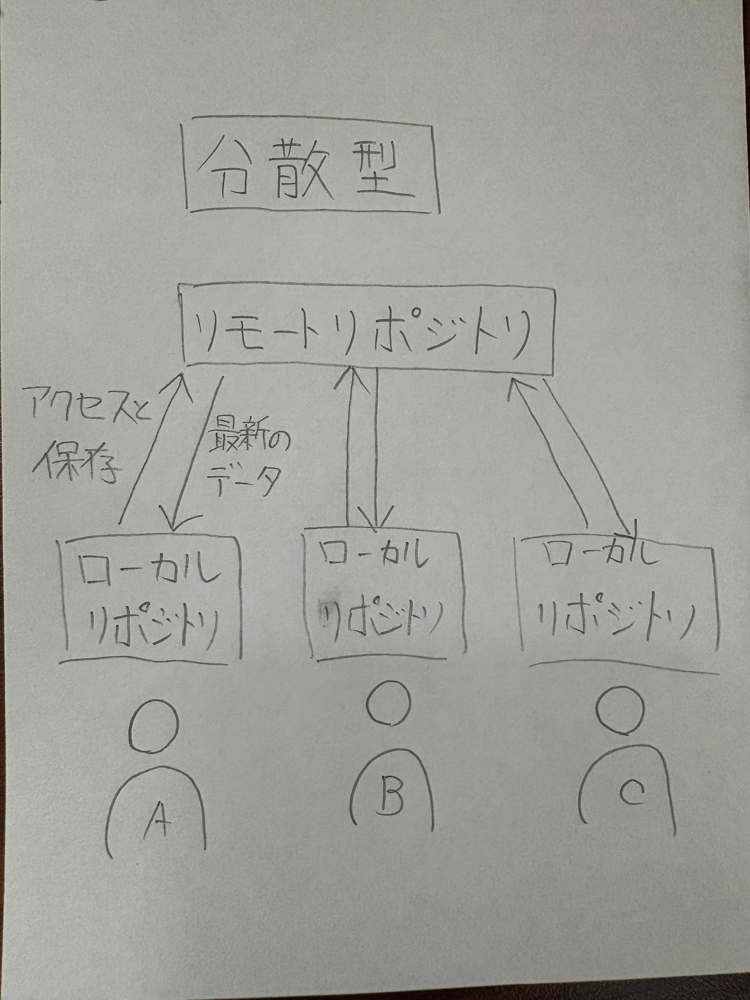
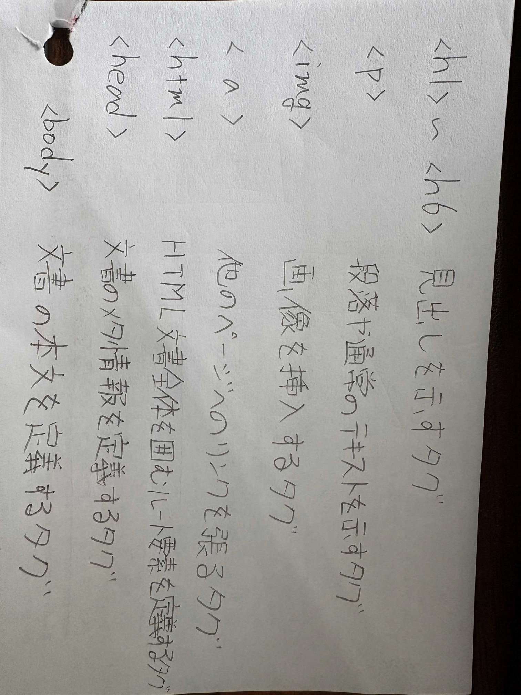

Gitとは何か？
- 分散型バージョン管理システムでファイルのバージョン管理が簡単にできるツール
- Gitは３つの英単語の頭文字
Global・Information・Tracker
包括的 ・変更履歴情報・追跡
分散型バージョン管理システムとは？メリットは？
簡単に言えば「みんなが同じデータのコピーを持って作業できる仕組み」

Gitを使うメリット
- 「Linux」の創始者リーナス・トーバルズさんが作ったこと
- 使い勝手が良く複数人で扱える分散型のバージョン管理システムを使えること
- 保存元のリモートリポジトリのサーバーがダウンしていてもローカルリポジトリに保存してあれば復元できるから
- オフラインでも作業ができる
- いつ・誰が・どんな変更したかを細かく追うことができる
- 誰でも無料で使うことができる
↓
そのため今ではGitの分散型のバージョン管理システムが世界で多く使われている
htmlとは何か？
ウェブページを作るための基本的なマークアップ言語のこと
「例」

これらを使い分けることで用途別に表すことが可能になる
他にもたくさんのタグが存在する
参考文献
Gitとは何か？
Gitの概念、初心者向け